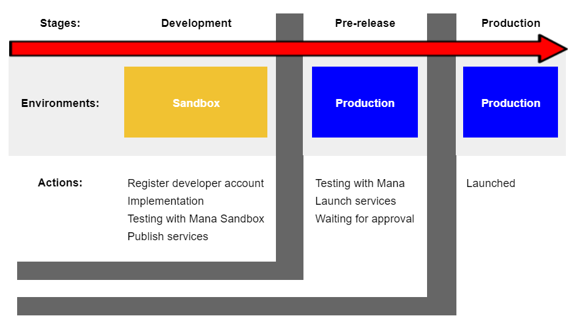

Development life cycle¶
การพัฒนาระบบของ 3rd party ร่วมกับ mana มีขั้นตอนการพัฒนาระบบที่ถูกรวบรวมตามลำดับขั้นตอนของแต่ละช่วงการทำงาน ทั้งนี้เพื่อรองรับกระบวนการทำงานตั้งแต่การเริ่มพัฒนา การเข้าสู่ช่วงทดสอบ ไปจนถึงการเผยแพร่สู่ตลาดเพื่อการใช้งานจริง ซึ่งจากที่กล่าวมาสามารถแบ่งวงจรการทำงานได้เป็นช่วงหลักๆดังนี้

ช่วงระยะพัฒนา (Development)¶
เป็นระยะที่เปิดโอกาสให้ทีมนักพัฒนาสามารถเข้ามาทำการพัฒนาระบบของตัวเองเพื่อทำการทดสอบระบบที่เป็นไปได้ในการทำตลาดหรือมีความสอดคล้องกับความต้องการของตลาด โดยการพัฒนาระบบทั้งหมดที่เกิดขึ้นในระยะนี้ผู้ใช้ภายนอกจะไม่สามารถเข้าใช้งานใดๆในขั้นตอนนี้ได้
การทำงานในระยะนี้เป็นการทำงานภายใต้ Sandbox environment ดังนั้นหากมีการทดสอบระบบใน Application นักพัฒนาจำเป็นต้องใช้ Mana sandbox application ควบคู่ไปกับการทดสอบของฝั่งนักพัฒนา ซึ่งหลังจากที่ได้มีการทดสอบระบบเป็นที่เรียบร้อย หากต้องการเผยแพร่ระบบออกสู่สาธารณะต้องทำการเชื่อมต่อกับ APIs เพื่อเตรียมเผยแพร่สู่ตลาด
ช่วงระยะเตรียมปล่อยออกสู่สาธารณะ (Pre-release)¶
เมื่อผ่านระยะพัฒนามาเรียบร้อยแล้วก่อนการนำระบบที่พัฒนาออกสู่ตลาดจะมีการนำระบบมาพักไว้ในช่วงที่เรียกว่า Pre-release ซึ่งเป็นช่วงที่มีการทำงานกับข้อมูลจริงทั้งหมด ภายใต้ Production environment เพียงแต่ยังไม่ได้เผยแพร่ออกสู่สาธารณะ เพราะฉะนั้นหากมีการทดสอบระบบใน Application นักพัฒนาจำเป็นต้องเปลี่ยนมาใช้ Mana application ควบคู่ไปกับการทดสอบของฝั่งนักพัฒนา
และหากนักพัฒนาต้องการจะทดสอบการใช้งานในระยะนี้ก็สามารถทำได้ ซึ่งร้านค้าที่ถูกสร้างขึ้นเพื่อทดสอบระบบขณะนั้นจะใช้ Service ของนักพัฒนาโดยจะถูกเรียกเก็บค่าใช้จ่ายเป็นเงินจริงตามที่ได้เขียนไว้ในระบบ ซึ่งรวมถึงการเก็บค่าบริการการตามสัญญาที่ได้ทำไว้กับทาง mana และเมื่อจบการทดสอบกระบวนการทำงานของระยะนี้ เงินที่ถูกจ่ายเข้ามาในระบบจะถูกคืนให้กับ Software company และร้านค้าที่ถูกสร้างขึ้นมาเพื่อทดสอบในขั้นตอนนี้จะถูกทำลายทิ้ง
ซึ่งหลังจากที่นักพัฒนาทดสอบระบบเรียบร้อยและต้องการนำระบบเผยแพร่ออกสู่สาธารณะ จะต้องมีการแจ้งเข้ามาเพื่อให้ทาง mana ทำการตรวจสอบและเตรียมดำเนินการเผยแพร่ออกสู่สาธารณะ
ช่วงระยะเผยแพร่ (Production)¶
เป็นช่วงของการนำระบบออกเผยแพร่สู่สาธารณะ เพื่อให้องค์กร ร้านค้า หรือคนทั่วไปที่สนใจในระบบนั้นๆสามารถเข้ามาใช้งานได้อย่างเต็มรูปแบบ ซึ่งนั้นรวมถึงการคิดค่าบริการตาม Service ที่มีการใช้งาน